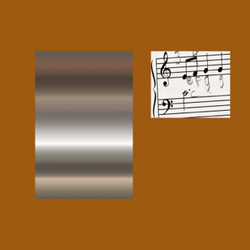

Quadeca
Life 1
ow, feels like childhood. Maybe an old memory and light shining on what may come, i love life. This album has some of the most fun production I have heard all year. It’s quirky, then dark, then turns it up. Life 1 is a culmination of Quadeca’s 2023–2025 sound, pushing into a more stripped-down territory where it sounds as though he is rediscovering himself as an artist, or maybe more like realizing who he really is as one. In Life 1 he doesn’t try to build a world or keep some narrative, but he lays it out on the table as charming folktronica tracks that bleed into huge ensemble bursts or gritty feedback buildups and eventually into rants about the wonder of celery. Soulful and candid lyrics keep this album grounded on top of the lush production, leaving every track as a breath of fresh air. Everything on this album is always new and exciting. I can never get enough of all the layers and sound effects weaved into every track, it makes me feel like I’m right at the center of it all, there at the birth of each song. Gets me so excited for life.

Life 1
- Life 1 (where did the time go)
- Dark magic
- The hero never dies
- It goes like this
- CELERY
- Make you my what
- Regular guy
- THE GAMBLER
- Like you always do
- Baby steps
- Hell of a time
- Illusion of choice
- Good grief
- In another life...